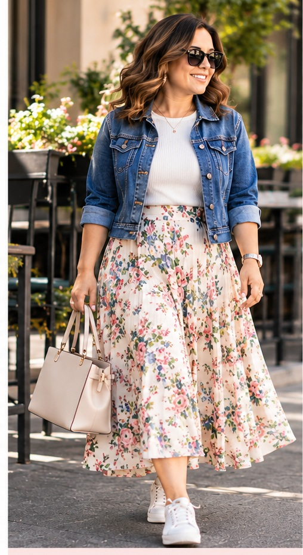
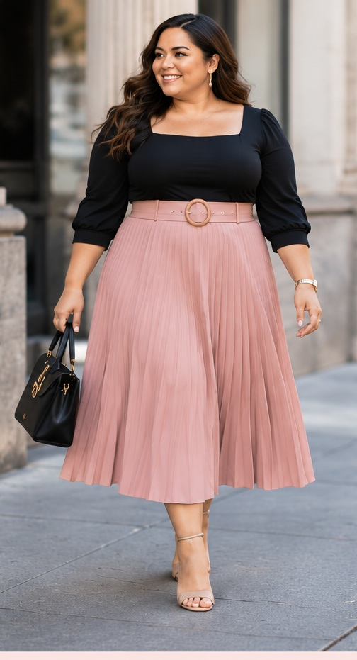
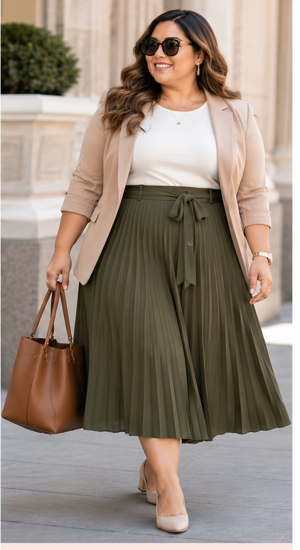

PETITE PERSPECTIVE
Faldas midi en cuerpos petite: cuándo el largo favorece y cuándo domina el look
La falda midi es una de las prendas más repetidas en la moda actual y, al mismo tiempo, una de las que más dudas genera entre mujeres bajitas. El problema no es simplemente “ser petite”: es cómo se distribuyen el largo, el volumen y la cintura dentro de una silueta más corta.
La falda midi ha pasado de ser una pieza asociada a looks clásicos a convertirse en una de las siluetas más versátiles de las últimas temporadas. Aparece en versiones satinadas, plisadas, de mezclilla, estampadas y estructuradas. Pero cuando la estatura es baja, la pregunta sigue apareciendo: ¿favorece o acorta visualmente?
La respuesta no cabe en una regla. Una falda midi puede alargar, equilibrar o dominar por completo el conjunto dependiendo de dónde empiece, dónde termine y cuánto volumen tenga entre esos dos puntos.
El largo “midi” no es una medida única
En las tiendas, dos faldas etiquetadas como midi pueden diferir varios centímetros. Para una mujer alta, esa diferencia puede sentirse pequeña. En una mujer petite, puede cambiar por completo la proporción porque el dobladillo ocupa una zona distinta de la pierna.
Cuando termina en la parte más ancha de la pantorrilla, la línea horizontal puede cortar visualmente la pierna. Cuando cae un poco más arriba o más abajo, el resultado puede sentirse más ligero. Por eso, probar distintos largos suele ser más útil que buscar una categoría específica en la etiqueta.

La cintura cambia la lectura del conjunto
Una falda de cintura alta puede crear una línea inferior más larga, especialmente cuando la blusa está metida por dentro o termina cerca de la cintura. En cambio, una falda que comienza muy abajo en la cadera puede desplazar visualmente las proporciones y hacer que el torso ocupe más espacio.
Esto no significa que todas las mujeres petite necesiten una cintura extremadamente alta. En cuerpos con torso corto, elevar demasiado la cintura puede reducir visualmente aún más la parte superior. El equilibrio depende de la relación entre torso y piernas, no solo de la estatura total.
Volumen: ni enemigo ni solución universal
Las reglas tradicionales suelen advertir a las mujeres petite contra las faldas amplias. Pero una falda con movimiento puede funcionar muy bien si el volumen empieza de manera controlada y el tejido tiene buena caída. El problema aparece cuando se acumulan demasiados elementos: pliegues muy grandes, capas, vuelos rígidos y una prenda superior igualmente voluminosa.
La clave está en decidir dónde queremos que esté el protagonismo. Si la falda tiene estampado o volumen, una parte superior más sencilla puede darle espacio visual. Si la falda es recta y limpia, el resto del look puede tolerar más textura.

Petite, curvy y plus size no son categorías opuestas
Ser petite solo habla de altura y proporción vertical. Una mujer petite también puede ser curvy o plus size. Por eso, los consejos que funcionan en una silueta muy delgada no necesariamente funcionan igual en una figura con más cadera, busto o muslo.
En cuerpos petite con curvas, la falda debe tener espacio suficiente para caer sin tensarse en la cadera. Una cintura bien ajustada y una tela que acompañe el movimiento suelen producir un resultado más elegante que simplemente elegir la opción más estrecha posible.

El calzado puede cambiar el efecto sin necesidad de tacones
Las bailarinas, mocasines delicados, zapatos de punta afinada y sandalias de líneas simples pueden acompañar una falda midi sin “acortar” automáticamente la figura. Más que la altura del tacón, importa cuánto contraste visual crea el zapato y cuánto interrumpe la línea del tobillo.
Un calzado ligero visualmente puede mantener continuidad. Uno muy robusto también puede funcionar, pero cambia la intención: el resultado será más contemporáneo y menos clásico.
Cuándo la falda empieza a dominar el look
Una falda midi domina cuando todos sus elementos compiten a la vez: mucho volumen, estampado grande, largo difícil, cintura poco definida y una prenda superior larga. Ninguno de esos elementos es incorrecto por sí solo; el problema aparece cuando todos ocupan demasiado espacio en una silueta pequeña.
Reducir solo uno de ellos puede ser suficiente. A veces basta con acortar la chaqueta. Otras veces, ajustar el largo dos o tres centímetros cambia todo el conjunto.
La mejor regla sigue siendo observar la proporción
La moda petite no debería limitarse a enseñar cómo “parecer más alta”. Una falda puede ser favorecedora aunque no alargue visualmente, siempre que el conjunto se sienta intencional y equilibrado. Esa diferencia es importante: vestir bien no es lo mismo que esconder la estatura.
La falda midi funciona cuando la persona controla la prenda y no al revés. Y esa relación depende mucho más del ajuste que de una lista universal de prohibiciones.
SIGUIENTE EN PETITE PERSPECTIVE
Vestidos de ocasión para mujeres petite: por qué el ajuste importa más que la tendencia
La próxima entrega analizará vestidos para bodas y eventos, incluyendo las diferencias entre siluetas delgadas, curvy y plus size.